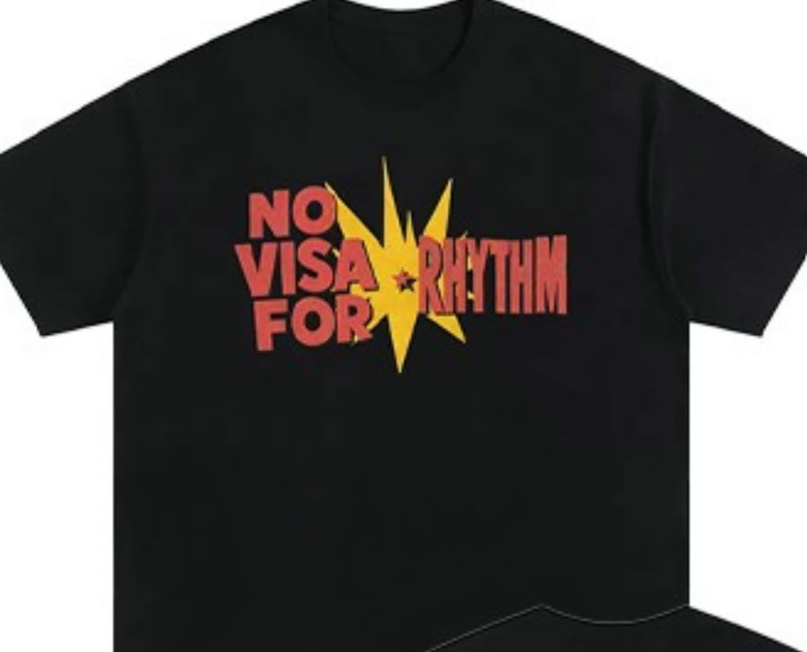
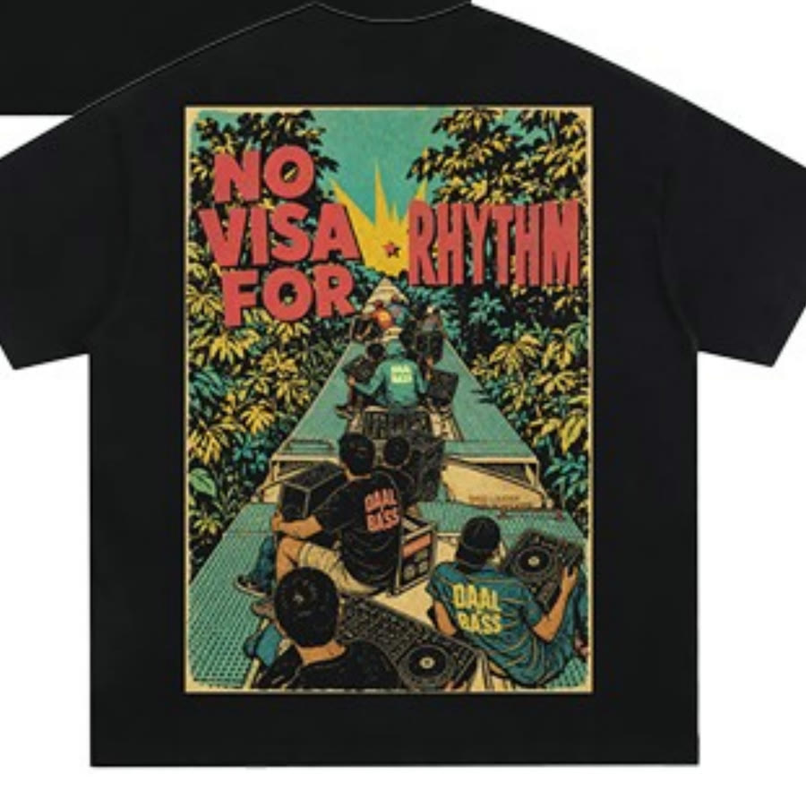

Daal & BassPhase 5 · No Visa For RhythmShoot 16 Sept 2026
Daal N Bass Ecommerce Shots
Download the PDF pack
Every shot needs a BTS.

Front · centre chest lockup

Back · full poster panel
Non-negotiables
- 4:5 native, 10 percent crop margin
- White seamless, paper at 250 to 252 RGB
- Tripod locked between front and back
- Tethered, ColorChecker every garment
- Steamer before every take
- Lint roller on black
Daal & BassDaal N Bass Ecommerce ShotsShoot 16 Sept 2026
01 FF
Full body, front
50 to 75mm, use 56mm
Head to feet. Square to camera, feet at shoulder width, arms hanging with a gap from the body, chin level, eyes to the lens.
SunglassesReference shows sunglasses OFF. Shoot this frame both ways, same tripod mark.
Watch Hands must not break the hem line. No curled fists.
Daal & BassDaal N Bass Ecommerce ShotsShoot 16 Sept 2026
02 TF
Three-quarter, front
50 to 75mm, use 56mm
Alternate front framing, mid thigh up. Same idea as 01 but tighter, so the chest print reads bigger in the grid.
SunglassesReference shows sunglasses ON. Shoot this frame both ways, same tripod mark.
Watch Shot 02 and 03 share a tripod mark. Set it once.
Daal & BassDaal N Bass Ecommerce ShotsShoot 16 Sept 2026
03 TB
Three-quarter, back
50 to 75mm, use 56mm
Same mark as 02, model turns 180 degrees. Head straight forward, arms carried slightly forward of the side seam so the back panel is one unbroken surface.
Watch Nothing on the back. No chain, no lanyard, no hair over the yoke. Steam the shoulder crease before every take.
Daal & BassDaal N Bass Ecommerce ShotsShoot 16 Sept 2026
04 HF
Half body, front
50 to 75mm, use 56mm
Crown to low hip. Body off axis by 10 to 15 degrees, weight on the back foot, one hand in a pocket, the other loose. Eyeline just past the lens.
SunglassesReference shows sunglasses OFF. Shoot this frame both ways, same tripod mark.
Watch Past about 20 degrees of turn the chest print starts to hide in the fold.
Daal & BassDaal N Bass Ecommerce ShotsShoot 16 Sept 2026
05 DF
Detail, front
60 to 90mm, use 70mm
Chin to mid torso. Print sits in the middle third with air around it. Bring the key round a few degrees so it rakes across the weave.
SunglassesReference shows sunglasses OFF. Shoot this frame both ways, same tripod mark.
Watch You want ink sitting on cotton with visible texture, not glowing off a flat wall.
Daal & BassDaal N Bass Ecommerce ShotsShoot 16 Sept 2026
06 DB
Detail, back
60 to 90mm, use 70mm
Crop through the neck and both shoulder seams. The panel fills the width and bleeds off the left and right edges. Head turned to profile.
SunglassesReference shows sunglasses ON. Shoot this frame both ways, same tripod mark.
Watch Shoot two crops. Tight for the store, looser with the head in for social.
Daal & BassDaal N Bass Ecommerce ShotsShoot 16 Sept 2026
07 LF
Flat lay, front
30 to 45mm, use 35mm
Straight down on white, sensor parallel to the floor, checked with a level. Body lightly stuffed with tissue, sleeves cocked forward and down, one soft fold at the hem.
Watch Keep a real shadow underneath. A cut out reads as a template.
Daal & BassDaal N Bass Ecommerce ShotsShoot 16 Sept 2026
08 LB
Flat lay, back
30 to 45mm, use 35mm
Same rig as 07, garment flipped, sleeve angles mirrored so the pair sits together in the gallery. Panel centred, sitting in the upper third of the back.
Watch While the boom is up, grab the hangtag and the care label too.
Daal & BassDaal N Bass Ecommerce ShotsShoot 16 Sept 2026
09 NL
Neck label
30 to 90mm macro, use 90mm macro
Straight down on the collar, garment flat, same boom as the flat lays. Collar opened just enough that the whole tag lies flat and square to camera.
Watch Every line legible at 100 percent. This frame carries the brand name, the care lines and the country.
Daal & BassDaal N Bass Ecommerce ShotsEasy win A
EASY WIN A
Red cyc, look changes
Your own Phase 5 reel
- Locked camera, model returns to the same mark every time
- One look per cut, hard cut, no transition
- Full length, red seamless, feet in frame
- Front then back on the hero pieces
- 35mm on the a6700, f/4, shoot 60p
Daal & BassDaal N Bass Ecommerce ShotsEasy win B
EASY WIN B
Headline crop, hands doing something
Reference, other brand
- Chest up, crop through the mouth, garment fills the frame
- One colourway per cut, locked framing so the cuts register
- Hands doing a different thing each cut to show the culture: cassette, mixer, chai, passport, mithai box
- The action shows the culture and reveals the detail, collar, print edge, stitch
- 56mm on the a6700, f/2.8, shoot 60p
Daal & BassDaal N Bass Ecommerce ShotsEasy win C
EASY WIN C
Studio setup, the whole build
This shoot day
- Phone on a tripod in the corner before anything goes up
- Paper rolling down, stands going up, the first light test
- Steaming, lint rolling, tape marks going down
- Cut it to ten seconds, the caption does the selling
- Costs nothing, you are doing the setup anyway
Daal & BassDaal N Bass Ecommerce ShotsEasy win D
EASY WIN D
Clothes line, model still
Reference, other brands
- Garments pegged on a line strung across the frame
- Model stands dead still, someone off camera swaps the piece in front of them
- The line is the culture, hang the whole drop on it
- Rails and stock behind carry the culture, shoot it in a shop or a stockroom
- Locked camera, 35mm on the a6700, shoot 60p
Daal & BassDaal N Bass Ecommerce ShotsEasy win E
EASY WIN E
Front still, back moving
Another shoot day
- One person holds a still pose front of frame, sharp
- Second person moves behind them, slightly soft
- The back half carries the culture and the information
- Same frame, one take, no cuts
- 56mm on the a6700, f/2.8, shoot 60p
Daal & BassDaal N Bass Ecommerce ShotsOn set
On set notes
Sunglasses
- 02 and 06 show them on. 01, 04 and 05 show them off. 03, 07, 08 and 09 have no face in frame.
- Shoot every on model frame twice, with and without, on the same tripod mark, back to back.
- Or lock one now and hold it across all five on model frames.
Camera
Sony a6700 is APS-C with a 1.5x crop. Every number below is the actual lens mm to put on the body, not the full frame equivalent.
- 01, 02, 03 full and three-quarter, 50 to 75mm, use 56mm (84mm equivalent)
- 04 half body, 50 to 75mm, use 56mm (84mm equivalent)
- 05, 06 detail, 60 to 90mm, use 70mm (105mm equivalent)
- 07, 08 flat lay, 30 to 45mm, use 35mm (52mm equivalent)
- 09 neck label, 30 to 90mm macro, use 90mm macro (135mm equivalent)
- Everything at f/8, ISO 100, 1/125, manual white balance
Running order
- Block A, on model. Shoot 01 to 06 without the model leaving the mark.
- Block B, flat lays and neck label. Boom up, all garments in one run.
- About 40 minutes per colourway, plus 45 minutes setup and colour calibration.